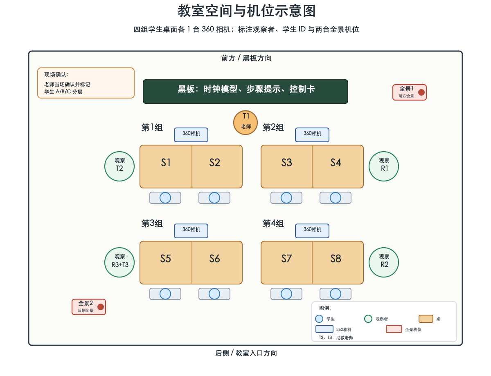
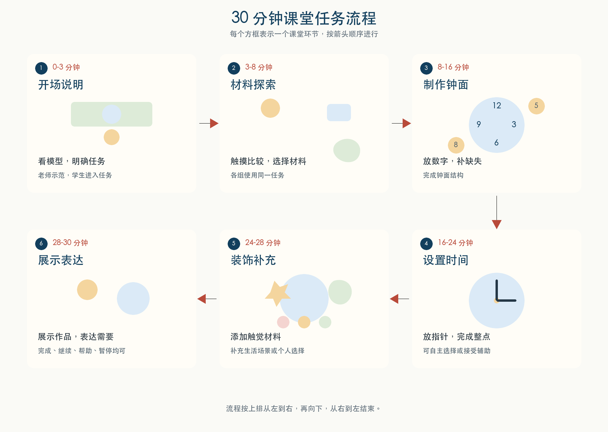

活动主题： 认识生活时钟与制作触觉时钟 时间： 2026 年 6 月 2 日 14:15 对象： 数学美社老师 x3、参与学生 x7 时长： 约 30 分钟
本次工作坊把“认识生活时钟”和“触觉材料体验”结合成一个可操作的课堂活动。学生通过选择、触摸、放置、移动和装饰材料完成一个触觉时钟；老师在课堂节奏中支持学生完成任务，并观察学生如何参与、使用材料、表达需要和回应帮助。
主要目标：
| 材料类别 | 具体材料 | 用途 | 课堂关注点 |
|---|---|---|---|
| 塑形材料 | 橡皮泥 | 制作或补充触觉数字、装饰区域 | 选择、揉捏、按压、塑形、重复或回避 |
| 标记材料 | 彩色笔 | 标记数字、装饰钟面或补充视觉提示 | 握笔、颜色选择、标记位置、纠正 |
| 底板材料 | 卡纸 | 制作钟面、数字或装饰底板 | 是否能理解钟面空间位置、放置和对齐 |
| 固定材料 | 图钉 | 固定指针或需要旋转的部件 | 安全使用、是否需要老师协助、安装方向 |
| 修改材料 | 橡皮擦 | 修改草稿标记或调整数字位置 | 自我修正、等待协助、 |
建议每组桌面先放少量材料，备用材料由老师统一管理，避免一次性材料过多影响课堂秩序。材料不做编号；只在作品收集时给学生作品贴编号。

图示说明：浅黄色矩形表示学生小组桌；蓝色小框表示四台 360 相机，每组 1 台；红色小框表示原两台全景机位。6 月 2 日实际只有 3 位研究观察者，第 1 组由 T2 临时兼任现场记录，第 2 组为 O1/R1，第 3 组为 O3/R3，第 4 组为 O2/R2。T2 同时承担助教老师职责，因此这次设置会分散 T2 的支持任务专注；后续课堂调整为观察者负责 field notes，助教老师专注支持学生。第 4 组当前只保留 S7，旧 S7 / former participant信息不再作为当前学生设置使用。

以下数据检验清单可用于填写课堂现场记录表，并在课后核对学生参与、材料互动、作品和教师反馈是否已经记录完整。
| 勾选 | 类别 | 简要记录内容 |
|---|---|---|
| □ | 课堂信息 | 日期、时间、地点、学生人数、分组、教师人数 |
| □ | 学生参与 | 参与、等待、求助、离开任务、完成 |
| □ | 材料互动 | 选择、触摸、按压、放置、移动、重复、回避、替换 |
| □ | 时钟学习行为 | 数字放置、补齐缺失数字、指针方向、整点选择 |
| □ | 教师支持 | 提示、示范、等待、协助、更换材料、情绪支持 |
| □ | 学生表达 | 完成、继续、更换、求助、暂停、停止、拒绝、情绪变化 |